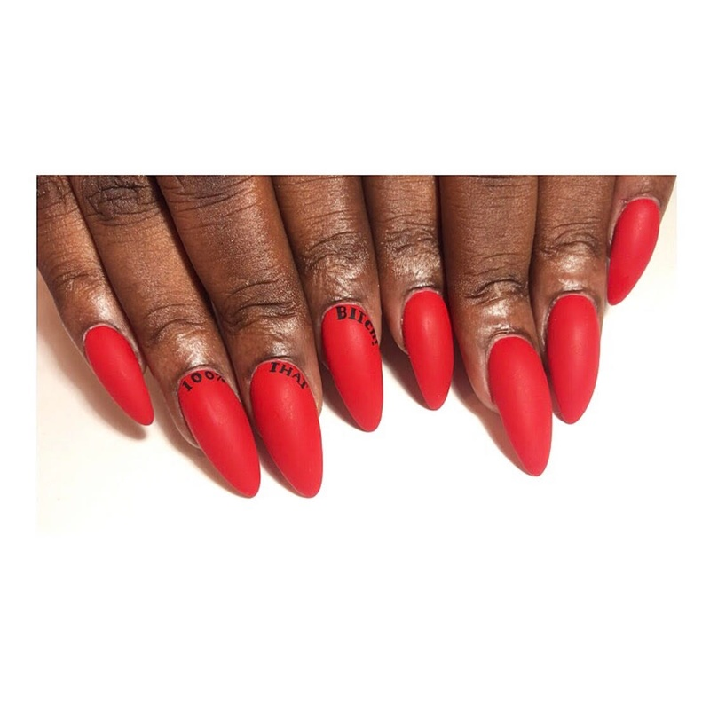
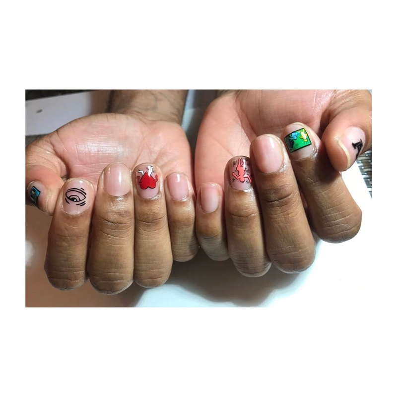
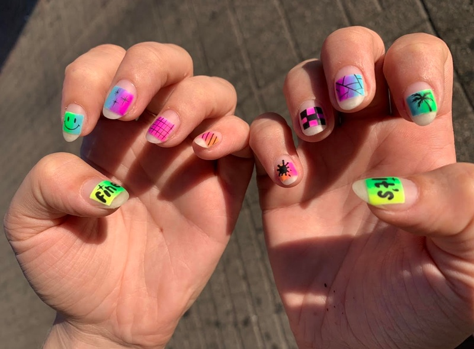
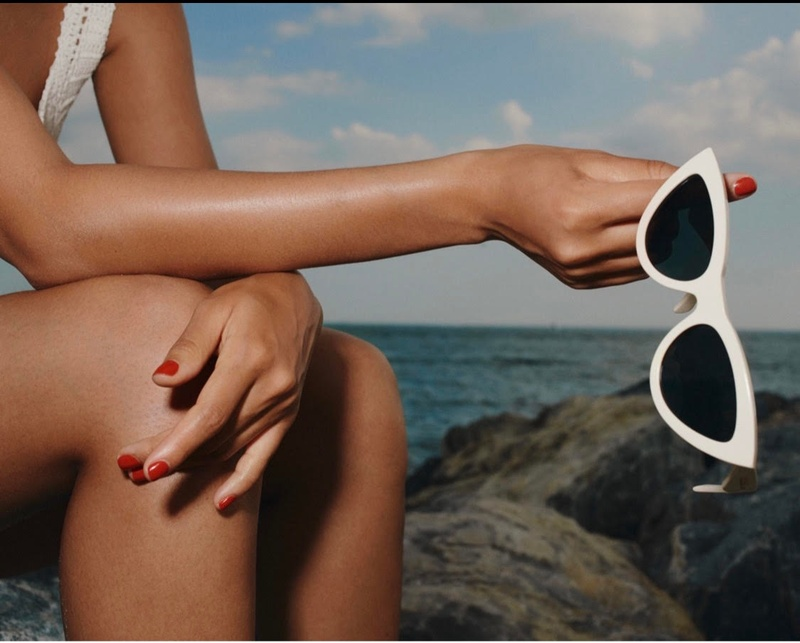
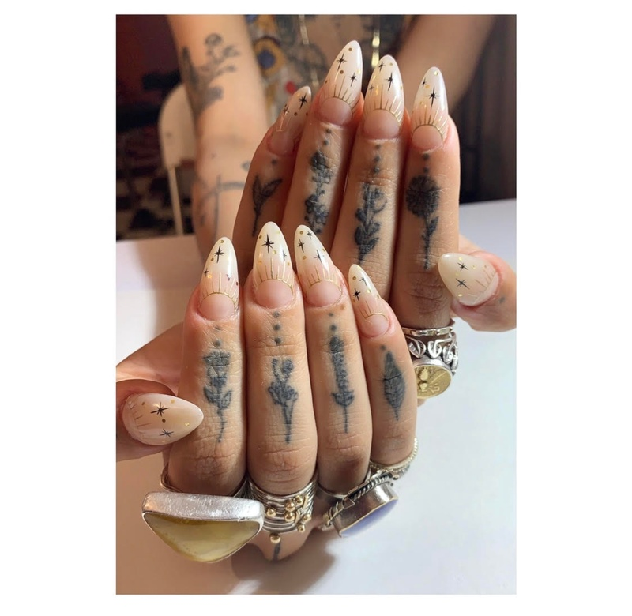
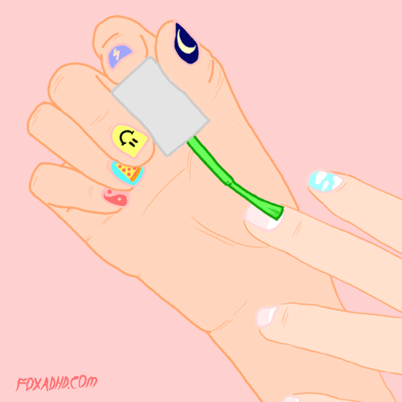
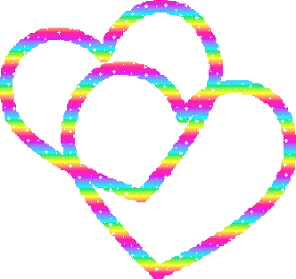

On becoming an artist and calling yourself one
Editorial manicurist Leanne Woodley on the path that led to her career, balancing your own creative ambitions with those of your client, and why being mentally healthy is the greatest asset for being creative.
Tell me about your path to becoming a manicurist.
I’ve always been in love with nails. I moved to New York and started working at Saks, and eventually fell into being a stylist’s assistant. That’s how I met Bernadette Thompson, a Black nail tech who has inspired a lot of pop culture and hip-hop culture when it comes to nails, and is known for setting nail art as a focal point. I went home and researched her and was like, “Wow, this is a billion dollar business, and there’s a Black woman thriving in it.”
Fast forward, I decide that I no longer wanted to be an assistant—it was killing my love for clothes and fashion. I went through a really big depression, and then I decided to go to nail school. I worked full time at a restaurant, part time at Paint Box to learn front of house, and I went to nail school full time.
I finished nail school, and sent Bernadette a message: “How do I propel my career without having to work in a salon?” She shut me down, and was like, “Not a thing. You have to put in that footwork.” I was stubborn, and did nails out of my house for a year, but then I realized she was right. So I worked at a bunch of salons. At one of them, I was one of two Black girls that worked there, so there was a lot of pressure to be just as good, if not better than, the seasoned nail techs. It’s very important for me as a Black nail tech to make sure that other Black women know that there is a space for them. Making that space known for younger Black girls.
How did you transition into doing editorial, and freelancing?
There is a fear when you go off on your own to be an independent artist, that your clients won’t follow you. But when I decided I wanted to branch off, people came back, dating back to connections I’d made as a stylist, and peopled booked me for stuff. One job led to a big job. Another big job led to another big job. Now that I’ve manifested myself into this space, I’ve been able to protect my artistry and my money, and protect a space—my home—that is healthy for me.
What does your creative process look like, from idea to finished product?
I’ve only recently become very comfortable with calling myself an artist. So thinking about my “process” is something to get used to. What I do has a very emotional flow, and sometimes it feels out of body. There are highs when picking colors. There’s another high when you and your client both agree that this one thing is going to be amazing. Then there are lows when I feel like I’m running over on time. There’s a low when I feel like something isn’t exactly the way I intended it to be. Then there’s another high when everything just comes out completely solid and how I want it to be and my client is happy.

The process is different with each client. I need a client’s input, because they have to have my art on their nails for the next three weeks. Some clients are more firm about guidelines they want me to work within. But after that, a lot of them are like, “Okay, do whatever you want.” It takes a little bit of trust.
How do you balance your own agency with a client’s wishes?
I’m going to be honest, I think I’m a little bit of a bully. I listen to my clients and their ideas, but I’m still lobbying for what I want. I don’t like for clients to be so rigid about the things that they want on their nails. I want them to feel open to what this could be. It’s exhilarating to hear them say, “I would never have picked this color. I would have never thought about this.” I don’t want anybody to ever feel like they were forced into something, but I also want to nudge people out of their box a little. So, I think it takes a little bit of understanding on both parts.
How did you learn to assign a monetary value to your work?
Working in a salon helps, because you realize how much money goes into buying supplies, and how much time goes into this artwork, and that you should be compensated for that. It’s the art, the foundation of the manicure itself, and everything in between. It’s also knowledge and information; tips for keeping your nails healthy, tips for moisturizing, tips for keeping the gel [polish] from breaking down. Tips for if you never come back to me, how and where you should get it removed.
I don’t believe in haggling for nails. I think that’s disrespectful. I think artists, and creatives in general, have to learn to stand firm. If you offer a service for a certain amount of money, don’t let anybody come and tell you, “Oh, well, they offer a different price down the street.” Go down the street, then. You don’t have to work with me, and that’s fine. There are a lot of hands in the world. If I lose a client because they think I’m too expensive, somebody else is going to come along who will be willing to pay my prices. So I learned from working in a salon, but I also have confidence in the quality of the product and service I’m providing.
What have you learned from working for yourself, at home, versus in spaces where you are not the overarching authority?
I’ve learned that I need a balance between the salon and set life, and that sunlight is a huge part of my creative process. I need the sun to vibrate and grow. Air is a huge part of my creative process, too. I’ve worked in both bright shops and in dark spaces, and now I work from my home.
I feel more comfortable in a space that feels cozy. My clients feel more comfortable in my space, and I need that comfort. On a set, it’s usually super bright and open and airy, and while that work is not as extensive and in-depth in terms of art, I am still able to flow really well in that environment.
How do you handle dissatisfaction with a project?
I fester, especially if I’ve taken pictures of it. I am the worst. I’ll take pictures of nail art that I’ve done and love, and then I get home and I zoom in and pick it apart. I’ve gotten a lot better about letting it go eventually, but not about how long I harp on it.
I’m a person who holds on to energy. And doing nails, I’m also taking on my clients’ energy, constantly. Learning to be mentally healthier has helped me to let go of things that don’t serve me. I don’t have to hold on to this project that didn’t come out perfectly. Being unhappy with your work doesn’t discredit you as an artist. And if a client is in love with a set, you have to let them love it, even though you don’t love it the same way.
How do you overcome a creative rut?Creative ruts usually stem from feeling like I’m doing the same thing over and over again. To get out of it, I will try to execute something super intricate that’s been on my brain. But I also love to do sets that are super simple, with simple lines, to combat a rut. I need an equal balance of both to push my mind creatively. I also put a lot of pressure on myself to succeed, so sometimes feeling like I’m in a rut is actually just the pressure I’ve put on myself.
Certain clients can help me out of a rut, too, especially the ones who are ready to sit with me for like, four hours. Those clients are inspiring, because they really trust me. One client, we did a full set, one hand Sailor Moon and one hand Rugrats. It was very liberating and exciting, because it made me stretch my brain. I don’t think I’m super strong in painting characters, but it came out amazing, and I thought, “You can do this more.” I love clients who push me or trust me to top myself.
On set, working with other creatives who trust me, helps me as well. People who ask me what I think. I position myself on set to be respected as an artist, as opposed to, “We’re the artists, and this is the manicurist.”
How do you approach digital spaces and social media?
I hate it, and I don’t have a healthy relationship with it. Instagram owns me. I constantly have to check it, because I have a business account. On my days off, I try to be on social media as little as possible. I really try to unplug on my days off, so that they are truly my days. If I post something that day, I don’t want to be on there for the rest of the day. But it’s hard, because if I post something that’s fire, I want to constantly go back and look at it. But if I don’t unplug, then I’m just never not working, and I have to not work sometimes, and enjoy those moments.
I try to be cognizant of how many times I’m on Instagram in a day, and I have also tried to at least remove myself from constantly looking at other people’s work. I’ve become very comfortable with what I’m doing, with what I’m putting out into the world. I’m only now learning to portray myself organically through Instagram. I think with social media, and all things, it’s about constantly revising and being able to change habits to make them healthy for you.
Aside from Instagram, how do you archive your work?
I hold on to those pictures and upload them to my Cloud. When it comes to editorial work, if there are any physical nail tips that I’ve had to pre-prep, I save them in a clear box. Eventually I want to frame them all, but right now I just save them.
I do go through my photos. I will go all the way down to the first picture I put up on Instagram, to my latest picture, to look at the growth. It makes me feel good. You can see how far you’ve come and how your brain has jumped creatively.
How do you define success or failure for yourself?
If I don’t succeed at one thing, it doesn’t mean that I won’t succeed in general. It means I just have to try a different way. When I cannot economically take care of myself, that’s when I’ve failed. Success, to me, is coming to a point where you are so happy with the work and the strides you’ve made, that whether you’re making millions or you’re a thousandaire, you’re happy with what you’re doing every single day. [tearing] I feel very emotional about this; being able to do what you want is the greatest joy. Every day will still feel labor intensive, but if you love it, no one can take that joy away from you.
How do you separate work and leisure time, as an independent creative?
I’m a work horse. I’m a Capricorn rising, so we need to work all the time. We’re not doing enough, ever. But I’m learning to listen to myself, as opposed to being like, “I just worked 14 hours, and I’m exhausted, but I’m going to this party just to show my face.”
When you’re able to work as a creative, and feed yourself, and save, it makes you want to play, but it also makes you want to just stay in the house and drink wine. I think I have a healthier balance now than I used to. By the weekend I’m like, “I need to be in my borough, within a four-block radius of my home.”
You’ve talked a little bit about mental health. What resources do you turn to in times of stress?
Therapy, and voice memo-ing. Whatever I’m angry at, whatever I’m sad about, whatever I’m happy about, I talk it out in my voice memos. I went through a breakup a few years ago, and I started to write lessons to self in my Notes app, and that helps, too. Therapy, writing lessons to self, and voice memo-ing. Also, recording myself doing facial exercises. I literally record myself stretching my face like, “Ahhhh, oooooh,” and I watch them, and that helps to release tension.
Before I started therapy, I would go to my friends, but their input would make my brain feel convoluted. I try to center myself and be by myself. I’m very much a loner, and I try to be alone with my thoughts a lot more now, as I’m getting older, so that I can be clear about the things that work for me and don’t work for me. What I need to put energy into, what I don’t need to put energy into. What is uplifting me and what’s not uplifting me.
At the end of the day, you are literally by yourself, without family, foe or friend. If you don’t get happy being with yourself, you cannot succeed creatively. I think it’s important for creatives to seek some sort of therapy, or find a space that helps them, because if you don’t, it’s very easy to lose yourself in your thoughts and go dark. But you can also go super light—it just depends on how you’ve centered yourself.
 